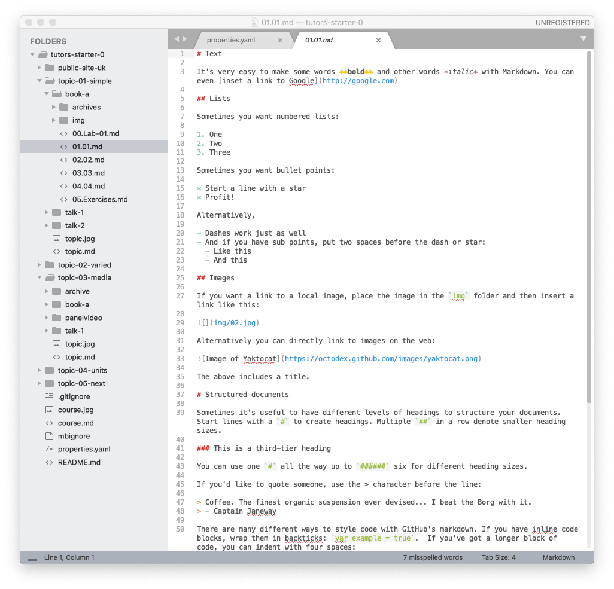

Objectives
Work through the structure of a Lab in detail, including the fundamentals of the Markdown notation.
Text
Markdown is a general purpose notation for composing web friendly content in simple text. There are only a few rules to learn to equip you for most types of simple web page composition.
Opening the lab we have already generated in sublime:

The lab itself contains a range of Markdown examples - these illustrate the basics of text formating in this notation:
Bold & Italics
It's very easy to make some words **bold** and other words *italic* with Markdown.
You can even [inset a link to Google](http://google.com)Lists
Sometimes you want numbered lists:
1. One
2. Two
3. Three
Sometimes you want bullet points:
* Start a line with a star
* Profit!
Alternatively,
- Dashes work just as well
- And if you have sub points, put two spaces before the dash or star:
- Like this
- And thisHeadings
Sometimes it's useful to have different levels of headings to structure your documents. Start lines with a # to create headings. Multiple ## in a row denote smaller heading sizes.
### This is a third-tier headingYou can use one # all the way up to ###### six for different heading sizes.
Links
You can inert links to other sites directly using the markdown syntax:
[Bitbucket](http://bitbucket.com)
[Github](http://github.com)These can be as bulleted links
- [Bitbucket](http://bitbucket.com)
- [Github](http://github.com)The above markdown will look like this in the lab:
Try these now and verify that the links appear and behave as expected.
Alternatively, you can just use html links in <> brackets:
- <http://github.com>
- <http://bitbucket.dom>In fact, in Markdown you can drop out to <html> seamlessly if you need to.
You can also insert links to other steps:
- [Step 01](#/01)
- [Step 02](#/02)
- [Step 03](#/03)
- [Step 04](#/04)The above should render like this:
If you try the above, then these will open other steps in the current lab.
Code Blocks
One advantage of Markdown - and an associated component rolled into tutors - is code blocks with syntax highlighting. This is implemented more or less automatically, using the this library:
To enable it, you surround your code fragment with three tildas : ~~~ :

This should appear like this in your lab:
public class HelloWorld {
public static void main(String[] args) {
// Prints "Hello, World" to the terminal window.
System.out.println("Hello, World");
}
}A key advantage of this over PDF, for instance, us that the code can be reliably copy/pasted by students into a development environment without any fear of extra formatting information entering the buffers.
Another example:
<!DOCTYPE html>
<html>
<head>
<meta charset="utf-8">
<title>My test page</title>
</head>
<body>
<p>This is my page</p>
</body>
</html>Take the above code into your lab, surround with ~~~. Regenerate the course and verify that it looks like it does above.
Highlight.js recognizes most of the main programming languages.
Images
In Tutors, all images you wish to use must first be placed in the img folder in the current lab:

The image can then be included in markdown using this syntax:
If you wish to have a title, you can insert it between the [] as in:
The is the above image with a title:
Try this now:
- Locate an image using google image search
- Incorporate into one of the lab steps
- Regenerate the course using
tutorscommand - Verify the image shows up in the content.
On most systems now you can just drag and drop from the browser directly into a folder open in Explorer (or Finder).
Archives
If you wish to distribute an archive as part of the lab, then place the archive in the 'archive' folder of the lab:
Then insert a link link this:
[Solution-01](archives/archive.zip)This should render like this:
And selecting downloads it locally.
Create a zip archive now, and try to link to it in one of the steps.
Exercises
Note the title of the step - Exercises. This is because the full title of the step is:
05.Exercises.md
In general, the labs work best if the first two characters are always a 2-digit number. However, the middle segment can be any string that makes sense. It is this middle segment that will be used in the lab menu
Try renaming the first step as follows:
01.01.md -> 01.Solution.md
Regenerate the course - and the Solution should appear in instead of the 01 step.